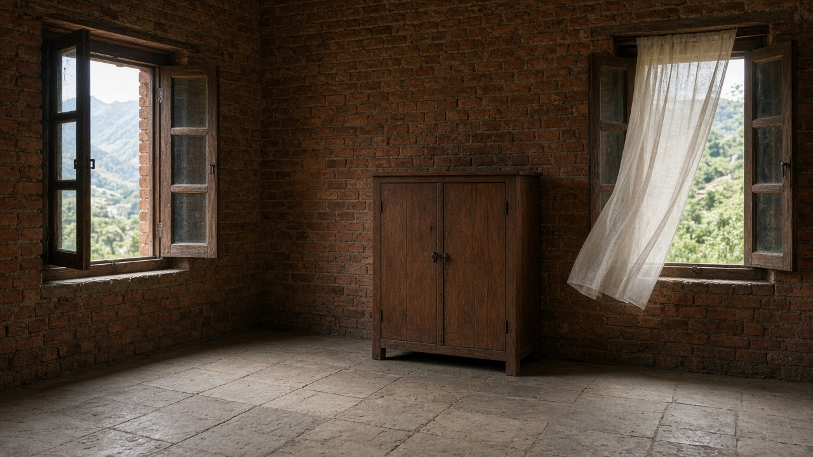
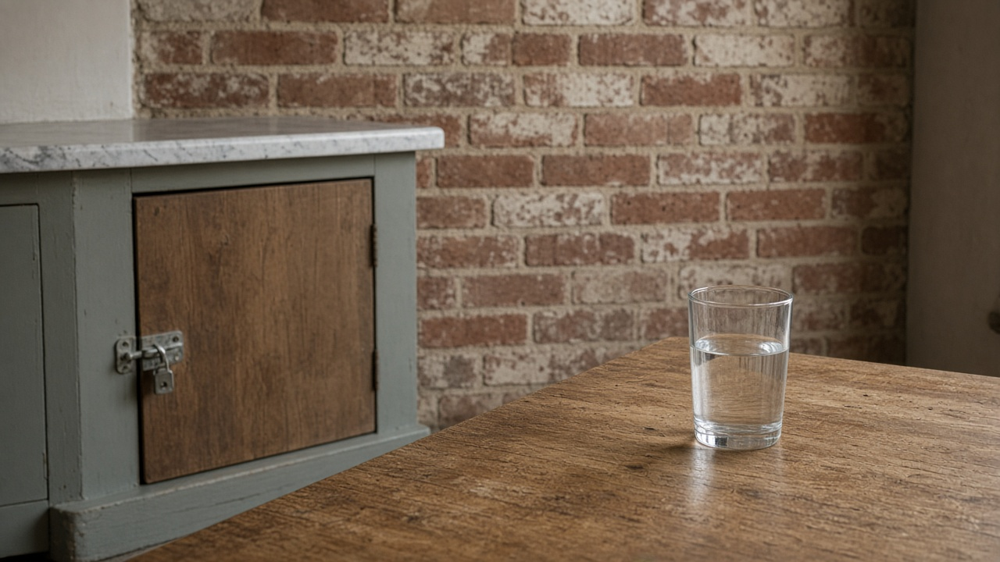
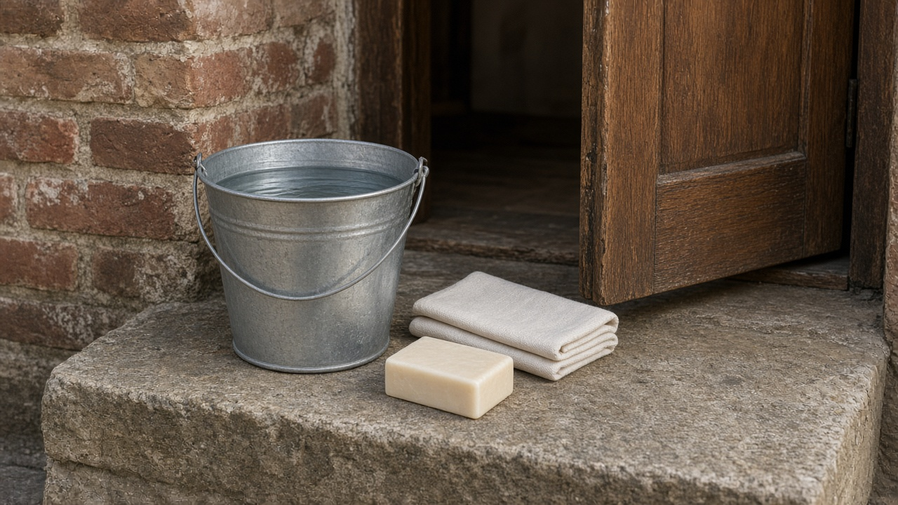

Indoor Chemical Exposures and Household Products
Published on August 20, 2026

Homes store a pharmacy of unintended chemistry: cleaners, bleaches, mothballs, paints, glues, pesticides, air fresheners, and cosmetics. Volatile solvents evaporate from wet paint and adhesives; formaldehyde can off-gas from pressed wood; phthalates and flame retardants ride on dust that toddlers ingest. Mixing bleach with acid or ammonia produces chlorine or chloramine gases that injure lungs within minutes. Accidental swallowing of concentrated detergents and kerosene remains a leading pediatric poisoning in many countries. Unlike outdoor industrial plumes, indoor product exposure is intimate, repeated, and under the control of the people who buy and store the bottles.
Labels often list marketing claims more clearly than ingredients. Fragrance mixtures can hide dozens of compounds, and child-resistant caps fail when bottles are poured into unmarked jugs. Storage under the sink or beside food creates the wrong neighbor for a toddler. Dermal uptake from leave-on cosmetics and from wet cleaning rags adds a pathway that air measurements miss. People with asthma or chemical intolerance may react at levels that do not bother others in the same room. Product recalls and poison-control hotlines exist because the household is a real exposure setting, not a private space beyond toxicology.
Safer practice is substitution and separation: choose unscented, simpler cleaners; never mix bleach with other products; keep original labels; lock cabinets; and ventilate during painting. Poison centers should be a known number on the refrigerator, and first-aid advice must stress not to induce vomiting after hydrocarbon swallows. Retailers can refuse to sell highly toxic mothballs in food-market aisles. This discussion is about bottled chemistry and residues on surfaces, not about smoke from cooking fuels. Indoor chemical health improves when a home is designed as a small workplace with an inventory, a lock, and a rule that no unlabeled liquid belongs in a drinking glass.

घरमा अनपेक्षित रसायनको भण्डार हुन्छ: सफा गर्ने पदार्थ, विरञ्जक, कपडा जोगाउने गोलो, रंग, गोंद, कीटनाशक, वायु सुगन्ध र सौन्दर्य सामग्री। वाष्पशील विलायक भिजेको रंग र टाँस्नेबाट उड्छन्; प्रेस काठबाट फर्माल्डिहाइड निस्कन सक्छ; फ्थालेट र ज्वाला प्रतिरोधक धुलोमा सवार हुन्छन् जुन नानीले निल्छन्। विरञ्जकलाई अम्ल वा अमोनियासँग मिसाउँदा क्लोरिन वा क्लोरामाइन ग्यास निस्कन्छ जसले मिनेटमै फोक्सो बिगार्छ। सांद्र सफाई चूर्ण र मट्टितेल संयोगवश निल्नु धेरै देशमा बाल विषाक्तताको प्रमुख कारण रहन्छ। बाहिरी औद्योगिक बादलभन्दा घरेलु उत्पादन सम्पर्क नजिक, दोहोरिने र बोतल किन्ने तथा राख्ने मानिसको नियन्त्रणमा हुन्छ।
लेबलले प्रायः सामग्रीभन्दा बजार दाबी स्पष्ट लेख्छन्। सुगन्ध मिश्रणले दर्जनौं यौगिक लुकाउन सक्छ, र बाल-सुरक्षित ढक्कन असफल हुन्छ जब बोतल चिह्न नभएको भाँडोमा खन्याइन्छ। सिंकमुनि वा खाना छेउ भण्डारणले नानीका लागि गलत छिमेकी बनाउँछ। छालामा रहने सौन्दर्य सामग्री र भिजेको सफाई पोकाबाट छाला ग्रहणले हावा मापनले छुटाउने मार्ग थप्छ। दम वा रासायनिक असहिष्णुता भएका व्यक्तिले उही कोठाका अरूलाई नबिगार्ने मात्रामा प्रतिक्रिया देखाउन सक्छन्। उत्पादन फिर्ता र विष नियन्त्रण हटलाइन अस्तित्वमा छन् किनकि घर वास्तविक सम्पर्क स्थल हो, विषविज्ञानबाहिरको निजी ठाउँ होइन।
सुरक्षित अभ्यास विकल्प र छुट्याइ हो: सुगन्धहीन, सरल सफाई छान्नु; विरञ्जक अरू उत्पादनसँग नमिसाउनु; मूल लेबल राख्नु; दराज ताल्चा लगाउनु; र रंग गर्दा हावा चलाउनु। विष केन्द्रको नम्बर फ्रिजमा ज्ञात हुनुपर्छ, र प्राथमिक उपचारले हाइड्रोकार्बन निलेपछि वान्ता नलगाउन जोड दिनुपर्छ। खुद्रा पसलले खाद्य बजार पङ्क्तिमा अत्यन्त विषाक्त कपडा गोलो बेच्न अस्वीकार गर्न सक्छन्। यो चर्चा बोतल रसायन र सतह अवशेषमा हो, पकाउने इन्धनको धुवाँमा होइन। घरेलु रासायनिक स्वास्थ्य तब सुध्रिन्छ जब घरलाई सूची, ताल्चा र कुनै बेनामी तरल पिउने गिलासमा पर्दैन भन्ने नियम भएको सानो कार्यस्थल जस्तो डिजाइन गरिन्छ।

घर में अनपेक्षित रसायन का भंडार होता है: सफाई पदार्थ, विरंजक, कपड़े की गोलियाँ, रंग, गोंद, कीटनाशक, वायु सुगंध और सौंदर्य सामग्री। वाष्पशील विलायक गीले रंग और चिपकाने से उड़ते हैं; दबाए काठ से फॉर्मल्डिहाइड निकल सकता है; थैलेट और ज्वाला प्रतिरोधक धूल पर सवार होते हैं जिसे नन्हा निगलता है। विरंजक को अम्ल या अमोनिया से मिलाने पर क्लोरीन या क्लोरामीन गैस निकलती है जो मिनटों में फेफड़े बिगाड़ती है। सांद्र अपमार्जक और मिट्टी तेल संयोग से निगलना कई देशों में बाल विषाक्तता का प्रमुख कारण रहता है। बाहरी औद्योगिक बादल से भिन्न घरेलू उत्पाद संपर्क निकट, दोहरा और बोतल खरीदने व रखने वाले व्यक्ति के नियंत्रण में होता है।
लेबल प्रायः सामग्री से अधिक बाजार दावे स्पष्ट लिखते हैं। सुगंध मिश्रण दर्जनों यौगिक छिपा सकते हैं, और बाल-सुरक्षित ढक्कन असफल होते हैं जब बोतल बिना चिह्न बर्तन में उड़ेली जाती है। सिंक के नीचे या भोजन के पास भंडारण नन्हे के लिए गलत पड़ोसी बनाता है। त्वचा पर रहने वाली सौंदर्य सामग्री और गीले सफाई पोने से त्वचा ग्रहण वायु मापन से छूटा मार्ग जोड़ता है। दमा या रासायनिक असहिष्णुता वाले व्यक्ति उसी कमरे के और लोगों को न सताने वाली मात्रा पर प्रतिक्रिया दे सकते हैं। उत्पाद वापसी और विष नियंत्रण हेल्पलाइन इसलिए हैं क्योंकि घर वास्तविक संपर्क स्थल है, विषविज्ञान से बाहर निजी जगह नहीं।
सुरक्षित अभ्यास विकल्प और अलगाव है: सुगंधहीन, सरल सफाई चुनना; विरंजक अन्य उत्पादों से न मिलाना; मूल लेबल रखना; अलमारी ताला लगाना; और रंग करते समय हवा चलाना। विष केंद्र का नंबर फ्रिज पर ज्ञात होना चाहिए, और प्राथमिक उपचार को हाइड्रोकार्बन निगलने के बाद उल्टी न कराने पर जोर देना चाहिए। फुटकर दुकानें खाद्य बाजार पंक्ति में अत्यंत विषैली कपड़ा गोलियाँ बेचने से मना कर सकती हैं। यह चर्चा बोतल रसायन और सतह अवशेष पर है, पकाने के ईंधन के धुएँ पर नहीं। घरेलू रासायनिक स्वास्थ्य तब सुधरता है जब घर को सूची, ताला और इस नियम वाला छोटा कार्यस्थल माना जाए कि कोई बेनाम तरल पीने के गिलास में नहीं आता।